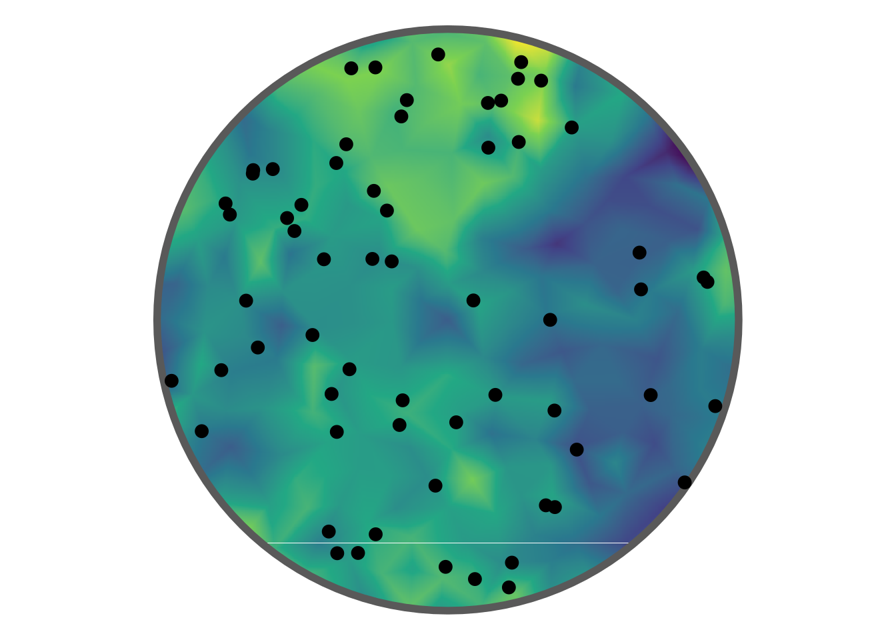
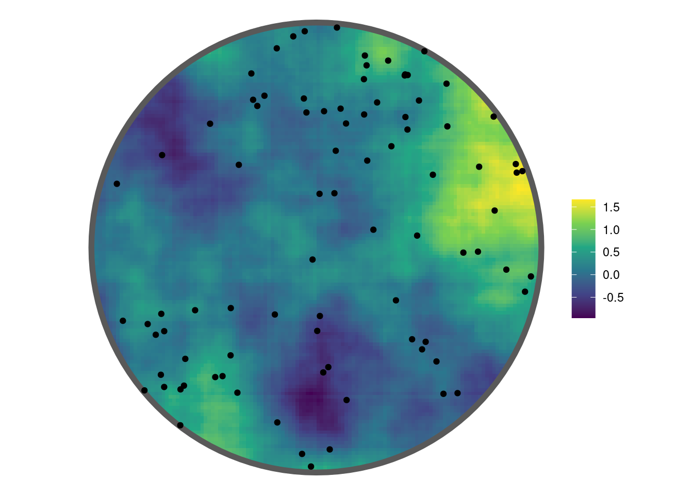

5 Log-Gaussian Cox process
A Log-Gaussian Cox Process (LGCP) is a doubly stochastic spatial point process. In the simplest case, the intensity of the point process over space is given by \[\Lambda(s) = \text{exp}(\beta_0 + G(s) + \epsilon)\] where \(\beta_0\) is a constant, known as the intercept, \(G(s)\) is a Gaussian Markov Random Field (GMRF) and \(\epsilon\) an error term.
Plotted below is a realisation of a LGCP within a disc shaped region overlain on the latent GMRF.
Following the Stochastic Partial Differential (SPDE) approach proposed by Lindgren, Rue, and Lindström (2011) a Matérn covariance function is used for the covariance of the random field. This takes two parameters \(\tau\) and \(\kappa\), commonly reported as \(r=\frac{\sqrt{8}}{\kappa}\) and \(\sigma=\frac{1}{\sqrt{4\pi\kappa^2\tau^2}}\), where \(r\) is the range and \(\sigma\) is the standard deviation. In the figure above \(\beta = 3\), \(\text{log}(\tau) = 1.6\), and \(\text{log}(\kappa) = 1.95\).
5.1 Delauney triangluations when fitting LGCP models
TODO
5.2 Fitting a spatial LGCP
Using the applied example given in Jones-Todd and van Helsdingen (2024) a LGCP model is fitted to sasquatch sightings using the function fit_lgcp(). For more detais on the use of the Delauney triangluation see Section 5.1.
data("sasquatch", package = "stelfi")
## get sf of the contiguous US
sf::sf_use_s2(FALSE)
us <- maps::map("usa", fill = TRUE, plot = FALSE) |>
sf::st_as_sf() |>
sf::st_make_valid()
## dataframe of sighting locations (lat, long)
locs <- sf::st_coordinates(sasquatch) |>
as.data.frame()
names(locs) <- c("x", "y")
## Delauney triangluation of domain
smesh <- fmesher::fm_mesh_2d(loc = locs[, 1:2], max.edge = 2, cutoff = 1)
## fit model with user-chosen parameter starting values
fit <- fit_lgcp(locs = locs, sf = us, smesh = smesh,
parameters = c(beta = 0, log_tau = log(1),
log_kappa = log(1)))
get_coefs(fit) Estimate Std. Error
beta -0.7659374 0.3558810
log_tau -0.6109840 0.1028264
log_kappa -0.9540269 0.1510160
range 7.3430015 1.1089108
stdev 1.3491825 0.1480772The estimated GMRF can be plotted using the show_field() function once the values have been extracted using get_fields().
get_fields(fit, smesh) |>
show_field(smesh = smesh, sf = us, clip = TRUE) + ggplot2::theme_classic()
The estimated intensity surface can be plotted using the show_lambda() function.
show_lambda(fit, smesh = smesh, sf = us, clip = TRUE) + ggplot2::theme_classic()
As a comparison, inlabru (Bachl et al. (2019)) is used to fit the same model to these data.
require(inlabru)
require(sp)
locs_sp <- locs; sp::coordinates(locs_sp) <- c("x", "y")
domain <- as(us, "Spatial")
matern <- INLA::inla.spde2.pcmatern(smesh,
prior.sigma = c(0.1, 0.01),
prior.range = c(5, 0.01)
)
## latent field
cmp <- coordinates ~ random_field(coordinates, model = matern) + Intercept(1)
sp::proj4string(locs_sp) <- smesh$crs <- sp::proj4string(domain)
## fit model
fit_inla <- lgcp(cmp, locs_sp, samplers = domain, domain = list(coordinates = smesh))
pars <- rbind(fit_inla$summary.fixed[,1:2], fit_inla$summary.hyperpar[,1:2])
pars mean sd
Intercept -0.4907638 0.24998054
Range for random_field 7.9401368 0.81253926
Stdev for random_field 0.8759888 0.06323398The table below gives the estimated parameter values from stelfi and inlabru, and hawkesbow along with the standard errors in brackets.
| \(\beta\) | \(r\) | \(\sigma\) | |
|---|---|---|---|
| stelfi | -0.766 ( 0.356 ) | 7.343 ( 1.109 ) | 1.349 ( 0.148 ) |
| inlabru | -0.491 ( 0.25 ) | 7.94 ( 0.813 ) | 0.876 ( 0.063 ) |